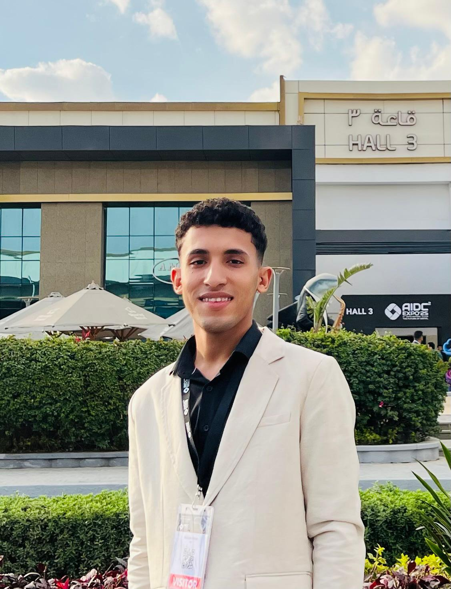

AI Engineer
LLMs & MLOps Specialist
Computer Vision & NLP Expert
AI Engineer specialized in Computer Vision, NLP, and Deep Learning
I have hands-on experience in designing and deploying end-to-end AI systems. I excel in building scalable, production-ready solutions using FastAPI, Docker, and MLflow.
My expertise includes Large Language Models (LLMs), RAG pipelines, and agent-based architectures, delivering high-impact AI solutions for real-world challenges.
PyTorch, TensorFlow, Scikit-learn, CNNs, RNNs, LSTM, Transformers.
Docker, Docker Compose, FastAPI, MLflow, GitHub Actions (CI/CD), REST APIs.
RAG, LangChain, LangGraph, FAISS, Prompt Engineering.
YOLOv8, Object Detection, Image Classification, Segmentation.
Transformers, Embeddings, Text Processing, spaCy, Sentiment Analysis.
Python (OOP), Data Structures & Algorithms.
Designed and deployed a full AI pipeline for Remaining Useful Life (RUL) prediction using LSTM (PyTorch), achieving 44% MAE reduction. Built a RAG-based diagnostic assistant with LangGraph and FAISS for context-aware insights. Developed REST APIs using FastAPI for real-time inference and integrated MLflow for experiment tracking and monitoring. Containerized the system with Docker Compose for scalable deployment.
PyTorch FastAPI Docker LangGraphDeveloped a real-time object detection system using YOLOv8 for vehicles and license plates. Trained on a custom COCO-format dataset and optimized for real-world traffic scenarios. Achieved high detection accuracy under various lighting and occlusion conditions.
YOLOv8 Computer VisionBuilt a U-Net-based deep learning model using PyTorch for medical image segmentation. Performed data preprocessing, augmentation, and fine-tuning to improve model generalization. Achieved accurate segmentation with IoU and Dice Score evaluation metrics, highlighting tumor regions reliably.
PyTorch U-Net Medical ImagingDeveloped a deep learning model using ResNet, EfficientNet, and VGG16 for blood cell classification. Implemented preprocessing, augmentation, and fine-tuning to maximize accuracy. Integrated the model into a Qt5-based GUI for interactive use and testing.
ResNet EfficientNet Qt5Developed a Transformer-based neural machine translation model for bilingual translation. Implemented attention mechanisms for improved translation accuracy on Arabic-English datasets.
Transformers NLPBuilt an LLM-based chatbot assistant to guide students in exploring computer science domains. Designed conversational flows and integrated knowledge-based responses for precise guidance.
LLMs ChatbotDownload my full curriculum vitae to see all my qualifications and experiences.
Download My CV